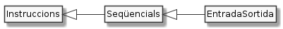

Instruccions d'entrada/sortida

En una primera aproximació, les instruccions d’entrada recullen un valor des d’un dispositiu d’entrada (ex. teclat) i l’assignen a una variable.
Per la seva banda, les instruccions de sortida dipositen el resultat d’una expressió a un dispositiu de sortida (ex. pantalla).
Quan llencem un programa per ser executat, el sistema operatiu li obre automàticament tres canals (o fitxers) anomenats entrada estàndard, sortida estàndard i sortida estàndard d'error. A menys que es faci res especial, el fitxer d'entrada queda connectat al teclat, mentre que els dos canals de sortida queden connectats a la pantalla.
De moment no en farem gaire cas de la sortida estàndard d'error.
Sortida
Ja hem vist en vàries ocasions com podem escriure un missatge des dels nostres programes en Java. Veiem uns quants exemples:
1System.out.print("Amb print() mostra un missatge i ");
2System.out.println("no salta de línia");
3System.out.println(); // Això fa un salt de línia sense missatge
4System.out.println("Amb println() fa salt de línia");
5int edat = 18;
6System.out.print("Amb ");
7System.out.print(edat);
8System.out.println(" anys ja es pot conduir un cotxe.");
9System.out.println("Repeteixo: amb " + edat + " anys ja es pot conduir un cotxe.");
10System.out.println("El doble de " + edat + " és " + (edat * 2));
De moment farem amb aquestes possibilitats, més endavant aniran apareixent més.
El que també és important és que ens fixem en el paper de les cometes
dobles i el símbol +.
Quan posem cometes dobles, el que hi ha dins les cometes es mostra tal
qual, mentre que quan no posem les cometes (ex. línia 7) el que es mostra
és el valor assignat a la variable (en el cas d'edat el valor 18)
Per altra banda quan, fora de les cometes, hi posem un + el que fa és
afegir o concatenar trocets de missatge un darrera de l'altre.

Entrada
Obtenir dades de l'entrada estàndard és molt típic quan comences a programar. Malauradament els dissenyadors de Java no ho van tenir present i han deixat que aquesta funcionalitat sigui una mica incòmoda.
Per simplificar-nos la vida ara que tot just estem arrencant, t'he
preparat una utilitat anomenada Entrada.java que farem servir per
per la lectura de l'entrada estàndard dels nostres primers
programes.
Trobaràs aquest fitxer ja instal·lat al teu repositori. Si no és així, demana-m'ho.
Fem un petit programa que demostri com es pot llegir:
1public class ComEtDius {
2 public static void main(String[] args) {
3 System.out.println("Com et dius?");
4 String nom = Entrada.readLine();
5 System.out.println("Hola " + nom + ", quan de temps!");
6 }
7}
Compila'l i executa'l:
$ javac ComEtDius.java
$ java ComEtDius
Com et dius?
Renat
Hola Renat, quan de temps!
El programa fa el següent:
A la línia 3 el programa mostra el missatge que demana el nom
La línia 4 declara la variable
nomi li assigna el valorEntrada.readLine(). Aquest valor es correspondrà amb el que els usuaris ens responguin.No et preocupis de què voldrà dir
String. Aviat el coneixerem. De moment, ja veus que es troba en el mateix lloc que en altres declaracions posàvemint.Ara que ja tenim el nom, podem saludar els nostres usuaris. Això és el que fa la línia 5.
Important
Hi ha altres maneres de llegir de l'entrada estàndard des de
Java. Una de molt popular entre els que comencen amb aquest llenguatge és
Scanner. Pels exercicis d'aquest curs, però, només fes servir
Entrada.readLine().

Llegint diferents tipus
El tipus de dades que ens retorna Entrada.readLine() és String.
Sovint ens interessarà que el tipus sigui un altre. Per això, ens caldrà
convertir-ho al que ens interessi.
Aquí tens la llista dels tipus que més farem servir inicialment. Els dos primers ja els coneixem i l'últim és una mica diferent.
int:int variable = Integer.parseInt(Entrada.readLine());float:float variable = Float.parseFloat(Entrada.readLine());double:double variable = Double.parseDouble(Entrada.readLine());char:char variable = Entrada.readLine().charAt(0);